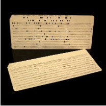

History of Input Devices
From punch cards to touchscreens: the tools we use to talk to computers.
Welcome to our website dedicated to Input and Output devices! Explore All Project Sub-Topics:

From punch cards to touchscreens: the tools we use to talk to computers.